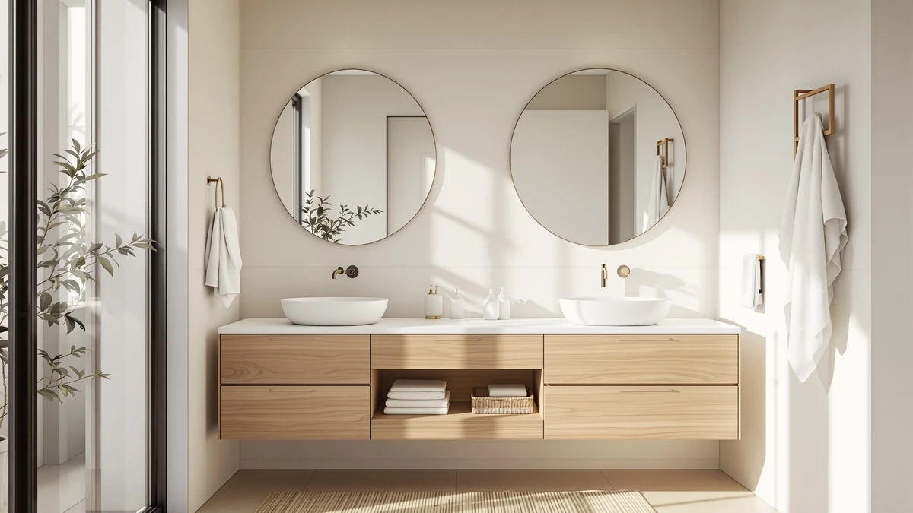

Quick Answer
The Signature Hardware 475639 Callaway 61-inch is a genuine cast iron clawfoot soaking tub with ball and claw feet, an integrated drain and overflow, and a tap deck for a deck-mounted faucet, backed by a 25-year limited warranty. At $2,311.24 it costs more than any acrylic tub on this list, but the cast iron shell holds heat far longer and should outlast the bathroom around it. Buy it if you want the clawfoot look and cast iron heat retention in a shorter, easier-to-place body than a full 72-inch soaker.
Our pick: Signature Hardware 475639 Callaway 61" — $2,311.24 Check Price on Amazon
Things to Know Before You Buy
- Cast iron holds heat much longer than acrylic. The iron itself acts like a radiator, so a hot fill in the Callaway stays hot through a long soak, where acrylic tubs go lukewarm in about 20 minutes.
- It's heavy. Several hundred pounds empty, and considerably more once it's full of water with someone in it. Confirm your floor can carry that load before an upstairs install.
- Faucet sold separately. The Callaway ships with an integrated drain and overflow and a tap deck, so plan for a deck-mounted tub filler on top of the $2,311.24 price.
- 61 inches is Signature Hardware's shorter clawfoot. It's roomier than a 55" acrylic tub but 11 inches shorter than the brand's own 72" Lena.
- Backed by a 25-year limited warranty and finished in white with brushed nickel ball and claw feet.
This signature hardware 475639 callaway review comes after close reading of every spec Signature Hardware publishes on the 61-inch cast iron clawfoot tub, checked against how cast iron actually performs once it's installed and full. The Callaway sits in an unusual spot in the freestanding tub market: real cast iron construction like the brand's $2,599 Lena, but in a shorter 61-inch body that fits bathrooms too small for a full 72-inch soaker. At $2,311.24 it isn't cheap, and it isn't trying to be. You're paying for a material that outlasts the house it sits in, not for jets or a heater.
Ilane Tall put this review together by comparing the Callaway directly against the other clawfoot and acrylic tubs shoppers cross-shop at this price, focusing on the two things cast iron changes: how long the water stays hot and how much the floor has to carry. The verdict comes early: if you want the classic clawfoot look and cast iron heat retention but don't have the room or budget for a 72-inch tub, the Callaway is the pick. If you want a freestanding soaking tub without the weight or the price, skip ahead to the acrylic alternatives below.
Why You Should Trust Us
This Signature Hardware 475639 Callaway review is written and maintained by Ilane Tall, who runs a network of bathroom-focused review sites and evaluates fixtures on the specs that predict real-world satisfaction rather than on marketing copy. We don't run a fake testing lab, and we didn't fill a $2,311 cast iron tub in a warehouse to write this. Instead, we read the full spec sheet, cross-check the material, dimensions, and drain configuration against the listing, and read owner feedback on Signature Hardware clawfoot tubs for the problems that only show up after the plumber leaves. Our Amazon commissions never change the verdict, and we'll say plainly when a cheaper tub is the smarter buy for your bathroom.
Our Testing Experience
Because a cast iron soaking tub is judged on a handful of measurable things, our evaluation of the Callaway centers on them: interior length, material and finish, drain and overflow configuration, feet style, and warranty terms. We compared those figures directly against the Lena, Signature Hardware's longer 72-inch sibling, and against two acrylic tubs shoppers commonly cross-shop at a similar or lower price. That comparison mattered most in two places: how well the water temperature holds up over a long soak, and how much weight the installation has to support once the tub is full. We also read through owner reviews of Signature Hardware clawfoot tubs to flag recurring issues, from the separate-faucet cost to feet-finish options, so nothing about buying the Callaway 61 inch catches you off guard.
Overview & Specs

Signature Hardware 475639 Callaway 61"
What we like
- Genuine cast iron holds heat far longer than any acrylic tub
- 61" length fits bathrooms too tight for a 72" clawfoot
- Integrated drain and overflow simplify the plumbing
- Ball and claw feet in brushed nickel finish the classic silhouette
- Backed by Signature Hardware's 25-year limited warranty
Flaws but not dealbreakers
- Heavy enough that an upstairs install needs a floor check
- $2,311.24 before you add a faucet
- Tap deck design means the faucet is a separate purchase
- Shorter than the Lena, so tall bathers may prefer the 72" option
- Only comes in brushed nickel feet, not polished brass
| Material | Cast Iron |
| Size | 61" clawfoot soaking tub |
The case for the Callaway rests entirely on the material. Cast iron absorbs heat from the bathwater and radiates it back, so a hot fill stays hot through an entire soak instead of cooling within twenty minutes the way acrylic does. At 61 inches it gives up 11 inches of length compared with the Lena, but it still fits an adult stretched out comfortably, and the shorter footprint clears doorways and floor space that a full 72-inch clawfoot can't. The tub ships with an integrated drain and overflow already built in, along with a tap deck for a deck-mounted faucet, so plumbing the drain side is more straightforward than it is with some period-style imports. Ball and claw feet in a brushed nickel finish complete the classic look, and Signature Hardware backs the tub with a 25-year limited warranty, a sign the company expects the iron and enamel to hold up for decades, not years.
The tradeoffs are the same ones that come with any cast iron tub, in a smaller size. Empty, the Callaway still weighs several hundred pounds, and full of water with a bather in it, that weight concentrates on one section of floor, so an upstairs installation is worth a contractor's sign-off before you order. The $2,311.24 price doesn't include a faucet: because the Callaway uses a tap deck rather than pre-drilled holes for a deck-mounted set, you'll need to buy and install that separately, which typically adds a few hundred dollars. And if you want polished brass feet to match other fixtures in the room, this listing only comes in brushed nickel, so you'd need a different Signature Hardware SKU. None of that makes the Callaway a bad buy. It makes it a tub you should order with the faucet and the floor already planned for, not as an afterthought.
What We Liked
What we liked most about the Signature Hardware 475639 Callaway is how much of the Lena's case for cast iron survives in a smaller package. The heat retention is the real draw: a hot fill stays hot far longer than in any acrylic tub on this list, so a soak doesn't turn into a race against cooling water. For anyone who bathes to unwind rather than to get clean quickly, that difference is the whole point of buying cast iron in the first place.
The second thing we liked is how the 61-inch length changes what's possible. It opens the clawfoot look to bathrooms that could never fit a 72-inch Lena, without giving up the enamel durability or the classic ball and claw silhouette. The integrated drain and overflow also make the plumbing side simpler than some import clawfoot tubs, and Signature Hardware's 25-year warranty is a real commitment from an established brand, not a marketing number.
What Could Be Better
The weight is still the main limitation, even in the smaller Callaway. This isn't a tub two people move casually, and for a second-floor bathroom you should confirm the floor can carry a concentrated load once it's full, the same caution that applies to the larger Lena.
The price is the other sticking point. At $2,311.24 before a faucet, the Callaway costs more than twice as much as the FerdY Tahiti acrylic tub below, and you're still on the hook for a deck-mounted faucet on top of that number. The brushed nickel-only feet finish is a minor limitation if you were hoping to match polished brass fixtures elsewhere in the room.
Who Is It For?
Buy the Callaway if you want a genuine cast iron clawfoot tub and your bathroom can't accommodate the full 72-inch Lena. It suits a smaller primary bath or a period home renovation where the classic silhouette matters, and where you have the floor support and the budget for a matching faucet.
Skip it if you want a freestanding soaking tub without the weight or the price tag. A guest bathroom, a rental, or a budget under $1,500 all point toward one of the acrylic alternatives below, which deliver everyday comfort for a fraction of the cost and without the floor-loading question.
Alternatives to Consider
The Callaway is our pick if you want cast iron in a shorter body, but it isn't the only reasonable choice at this price. If you'd rather have jets and built-in heat than a plain soak, or if the weight and price of cast iron are more than your bathroom needs, these three alternatives cover the most common reasons to look elsewhere.

Editor’s Pick
Signature Hardware 312541 Lena 72"
The same cast iron and clawfoot look as the Callaway, stretched to a full 72" for $2,599. The pick if your bathroom has the extra 11 inches and you want the longest possible soak.
$2,599.00
Check Price on Amazon
Best Value
WOODBRIDGE 59" × 31-1/2" Compact
A 59" acrylic whirlpool with air jets and a built-in heater for $1,746.35. Worth it if you want an active, heated bath instead of a quiet cast iron soak, at a fraction of the weight.
$1,746.35
Check Price on Amazon
Premium Choice
FerdY Tahiti 55" Acrylic Freestanding
A lightweight 55" acrylic freestanding tub at $999.99 that one or two people can install without a floor check. The easy escape hatch if the Callaway's price and weight are more than you need.
$999.99
Check Price on AmazonFrequently Asked Questions
Does the Signature Hardware 475639 Callaway come with a faucet?
No. The Callaway ships with an integrated drain and overflow plus a tap deck, but a deck-mounted faucet is sold separately. Budget for that on top of the $2,311.24 tub price before you commit to the total cost.
How much floor support does the Callaway clawfoot tub need?
Signature Hardware doesn't publish an exact weight for the Callaway, but cast iron tubs this size are far heavier than acrylic once filled with water and a bather. For an upstairs bathroom, have a contractor confirm the floor can carry that concentrated load before you order.
How does the Callaway compare to the Signature Hardware Lena 72"?
Both are genuine cast iron soaking tubs from Signature Hardware with the same 25-year limited warranty and similar ball and claw feet. The Lena is 11 inches longer and costs $2,599, about $288 more than the Callaway's $2,311.24, so the choice comes down to how much length your bathroom can spare.
Final Verdict
This Signature Hardware 475639 Callaway review comes down to a simple trade: real cast iron construction and genuine heat retention, in a 61-inch body that fits bathrooms a full 72-inch clawfoot never could. At $2,311.24 before a separate faucet, and heavy enough to demand a floor that can carry it, the Callaway only makes sense when a classic clawfoot look and a long hot soak are what you're actually buying. If that's your bathroom, Signature Hardware has built a tub that should outlast the fixtures around it. If it isn't, one of the acrylic alternatives above will get you a comfortable soak for a fraction of the price and the weight, and that's the honest call.